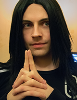

 Юлиан "Kilian" НечаевскийУвлекаюсь самореализацией в области графики, макетирования, музыки и простейшего программирования. Большой фанат классической серии игр Doom с 1994 года. Автор проектов ZFootBall, Russian Doom и других. Удостоен собственной страницы на DoomWiki. Контрибьютор проектов Chocolate Doom, Crispy Doom и Doom Retro. Со мной всегда можно связаться через следующие источники:
|